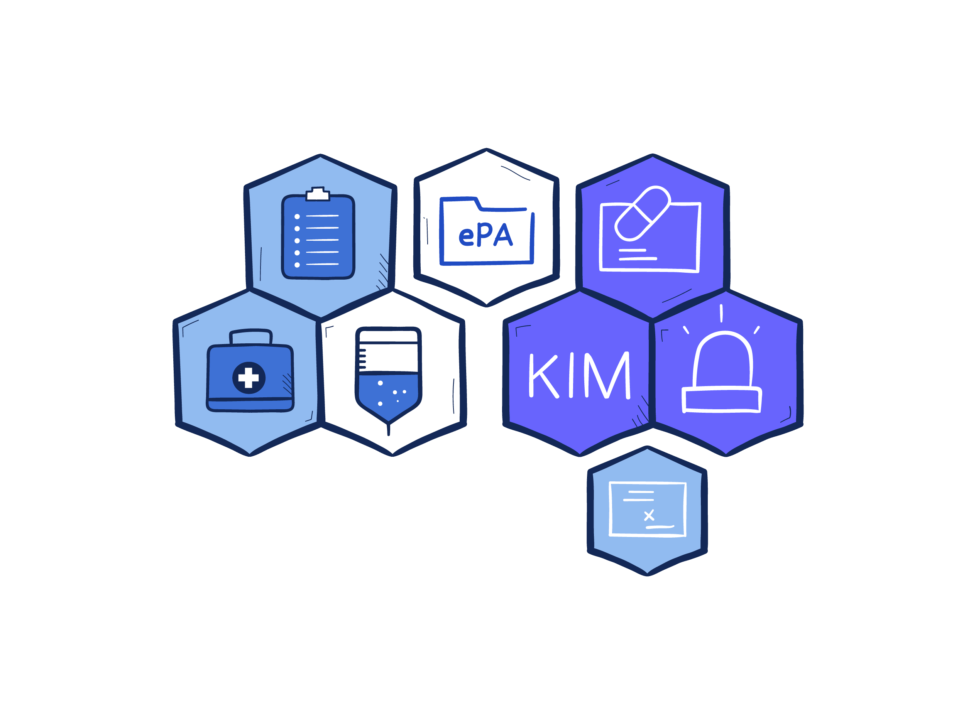
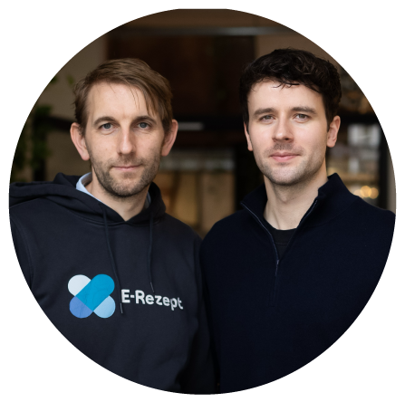
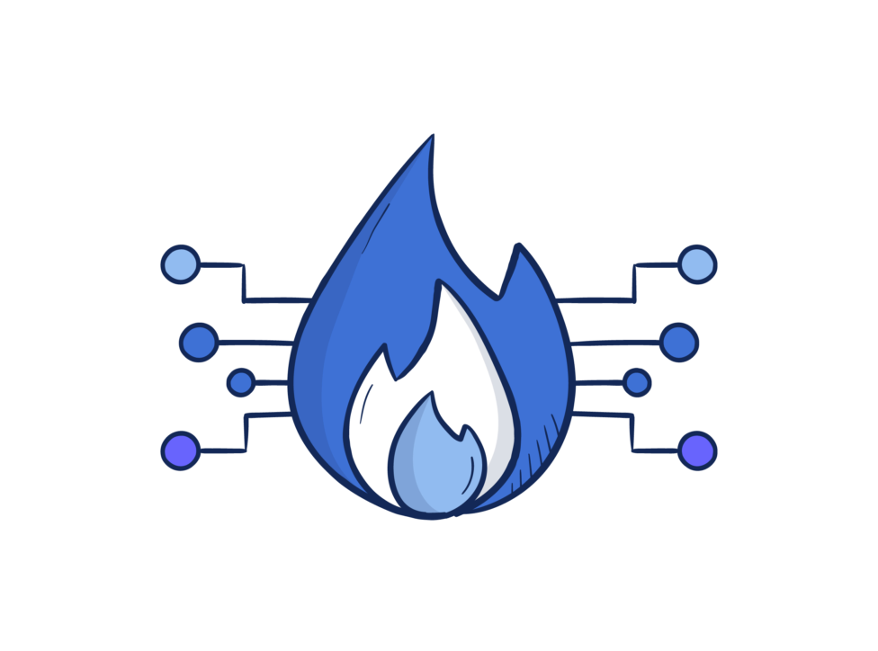

Telematikinfrastruktur

Die service health erx GmbH ist ein spezialisierter Beratungs- und Technologiepartner im Bereich Health-Tech mit Sitz in Berlin. Unser interdisziplinäres Team aus Software Entwickler:innen, IT-Architekt:innen und Zulassungsexpert:innen entwickelt maßgeschneiderte Lösungen für Akteure des deutschen Gesundheitswesens, wie Primärsystemanbieter, Krankenkassen und Kliniken.
Dabei verfolgen wir den Ansatz alle eigenen Produkte Open Source zu entwickeln. Diese Prinzipien von Zusammenarbeit, Transparenz und Innovation durch Wissenstransfer leiten auch unsere Arbeit als Team. Mit tiefgehender Telematikinfrastruktur-Expertise und praxisnaher Produktentwicklung gestalten wir gemeinsam die Zukunft des digitalen Gesundheitswesens.

Die service health GmbH beteiligt sich in diesem Jahr zum zweiten Mal am TI Capture The Flag (CTF) der gematik GmbH. Wie im letzten Jahr haben wir gemeinsam mit der gematik technische Aufgaben und Challenges entwickelt, die die Teilnehmenden vor spannende sicherheitsrelevante Rätsel rund um die Telematikinfrastruktur (TI) stellen.
Im Sinne unseres Open-Source-Ansatzes, liegt uns als TI-Expert:innen der Austausch mit der Community besonders am Herzen. Wir freuen uns also gemeinsam zu lernen, Wissen zu teilen und die TI noch sicherer zu machen.

